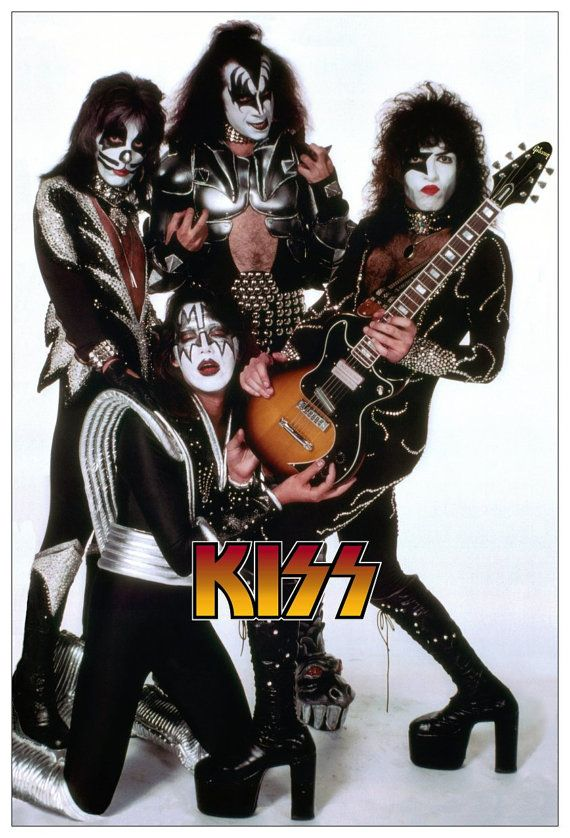
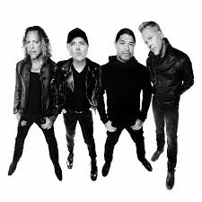

My 10 Favorite Bands
The Rolling Stones
Guns'N Roses
Iron Maiden
Kiss

Metallica

Def Leppard
The Beatles
Pink Floyd
Huey Lewis & The News
Bob Seger and The Silver Bullet Band

The Rolling Stones is a great band with many popular hits. The band has released many great albums. These albums include Sticky Fingers, Let it Bleed, Beggar's Banquet and more.
Visit for more information

Guns 'N Roses, one of the most popular rock bands of all time have many great songs. Songs that were big hits include Sweet Child 'O' Mine, November Rain, Patience and many more. The bands debut album, Appetite for Destruction is sometimes regarded as the greatest debut album from any band.
Visit for more information

Iron Maiden, a British Metal group is one of my favorite bands to listen to. From great guitar solos and vocals, it is great to jam out to. The band also has a cool mascot named Eddie.
Visit for more information
Kiss, the band widely known for the makeup and crazy outifts are really great to listen to. From songs like Lovegun to Detroit Rock City, the band is really great to listen and jam out to.
Visit for more information
Metallica, a heavy metal band that has some softer songs. They range from the heavy Master of Pupperts to the softer acoustic sounds of Nothing Else Matters
Visit for more information

Def Leppard is a great band to listen to. They were recently inagurated into the Rock 'N' Roll Hall of Fame this year.
Visit for more information

The Beatles, probably the most known band of all time has many great songs. The Beatles have some of the most iconic album covers like Sgt Peppers Lonely Hearts Club Band, and Abbey Road.
Visit for more information

Pink Floyd is a great band to listen to mello out. They are very psychadelic and are great to chill out to.
Visit for more information

The band is great to listen to and are great for just singing in the car. Their songs are very catchy and haved been on the many soundtracks for popular movies, like American Psycho and Back to the Future.
Visit for more information

Bob Seger is another great band to listen to rock out. Their song Old Time Rock 'N' Roll is a great dancing and lip sync song like Tom Cruise did in Risky Business.
Visit for more information